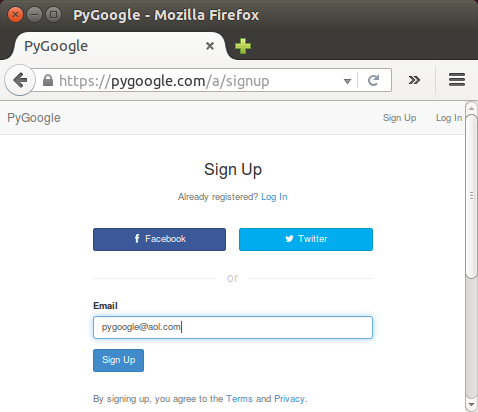
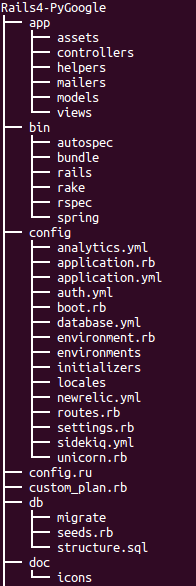
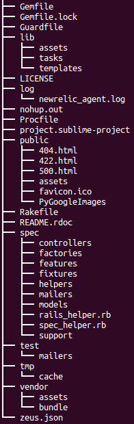
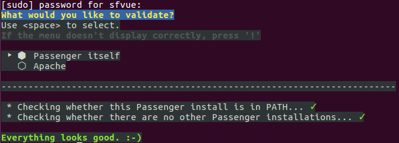

<!DOCTYPE html>

<!-- Mirrored from www.bogotobogo.com/RubyOnRails/RubyOnRails-Deploying-a-Rails4-App-on-CentOS7-production-server-with-Apache-and-Passenger.php by HTTrack Website Copier/3.x [XR&CO'2014], Mon, 11 Dec 2017 05:01:26 GMT -->
<head>
  <title>Ruby on Rails : Deploying a Rails 4 app on CentOS 7 production server with Apache and Passenger I - 2016</title>
  <meta charset="UTF-8">
  <meta content="Ruby On Rails Tutorial: Deploying a Rails 4 app on CentOS 7 production server with Apache and Passenger" name="description" />
  <meta content="Ruby On Rails Tutorial: Deploying a Rails 4 app on CentOS 7 production server with Apache and Passenger, rails db:setup, Phusion Passenger Setup, Bundle install, Redis, memcached, postgres" name="keywords" />
  <meta name="viewport" content="width=device-width, initial-scale=1">

  <link href="http://netdna.bootstrapcdn.com/bootstrap/3.0.0/css/bootstrap.no-icons.min.css" rel="stylesheet">
  <link href="http://netdna.bootstrapcdn.com/font-awesome/4.0.3/css/font-awesome.css" rel="stylesheet">
  <link rel="stylesheet" href="http://fonts.googleapis.com/css?family=Alice|Open+Sans:400,300,700">
  <link rel="stylesheet" href="../public/css/app.css">
  <link rel="stylesheet" href="../public/css/styles.css">
  <link rel="stylesheet" href="../public/css/bogostyleWidePreNew.css">
</head>

<body class="home">
    <nav class="navbar navbar-default navbar-fixed-top">
    <div class="container-fluid">      
      <div class="navbar-header">
        <!--<button type="button" class="navbar-toggle collapsed" data-toggle="collapse" data-target="#navbar" aria-expanded="false" aria-controls="navbar"> -->
        <button type="button" class="navbar-toggle collapsed" data-toggle="collapse" data-target=".navbar-collapse" aria-expanded="false" aria-controls="navbar"> 
          <span class="sr-only">Toggle navigation</span> 
          <span class="icon-bar"></span> 
          <span class="icon-bar"></span> 
          <span class="icon-bar"></span> 
        </button>
        <a class="navbar-brand" href="../index-2.html">BogoToBogo</a>
      </div>
      
      <div class="navbar-collapse collapse">
        
        <ul class="nav navbar-nav">
          <li class="active"><a href="../index-2.html">Home</a></li>
          <li><a href="../about_us.html">About</a></li>
          <li><a href="../Hadoop/BigData_hadoop_Install_on_ubuntu_single_node_cluster.html">Big Data</a></li>
          <li><a href="../python/scikit-learn/Artificial-Neural-Network-ANN-1-Introduction.html">Machine Learning</a></li>
          <li><a href="../AngularJS/AngularJS_Introduction.html">AngularJS</a></li> 
          <li><a href="../python/pytut.html">Python</a></li>
          <li><a href="../cplusplus/cpptut.html">C++</a></li>
          <li><a href="../DevOps/DevOps_Jenkins_Chef_Puppet_Graphite_Logstash.html">DevOps </a></li>
          <li><a href="../Algorithms/algorithms.html">Algorithms</a></li> 
          <li class="dropdown">
            <a href="#" class="dropdown-toggle" data-toggle="dropdown">More...<b class="caret"></b></a>
            <ul class="dropdown-menu">
           
              <li><a href="../Qt/Qt5_Creating_QtQuick2_QML_Application_Animation_A.html">Qt 5</a></li>                           
              <li><a href="../Android/android.html">Android</a></li>
              
              <li><a href="../Linux/linux_tips1.html">Linux</a></li>
              <li><a href="../Java/tutorials/on_java.html">Java</a></li>
              <li><a href="../CSharp/.netframework.html">CSharp</a></li>
              <li><a href="../VideoStreaming/videostreaming_etc.html">Video Streaming</a></li>
              <li><a href="../FFMpeg/ffmpeg_fade_in_fade_out_transitions_effects_filters_slideshow_concat.html">FFmpeg</a></li>
              <li><a href="../Matlab/Matlab_Tutorial_Manipulating_Audio_I_Reverse_Delay_Tone_Control_Changing_Speed_Removing_Vocals.html">Matlab</a></li>
              <li><a href="../python/Django/Python_Django_Forums_Shared_Host.html">Django 1.8</a></li>
              <li><a href="../Laravel5/Laravel5_ToDo_List_Sample.html">Laravel 5.2</a></li>
              <li><a href="RubyOnRails.html">Ruby On Rails</a></li>
              <li><a href="../HTML5/HTML5_Tutorial.html">HTML5 & CSS</a></li>
              <li><a href="../AmazingPlaces/index.html" target="_blank">
Earth</a> </li>
            </ul>
          </li>
        </ul>      
      </div>
    </div>  
  </nav>  

  <div id="main">
    <div class="container">
      <div class="row section featured topspace">
        <div class="row">
          <div class="col-sm-9 col-md-9 col-xs-9">
            <h2 class="section-title">Deploying a Rails 4 app on CentOS 7 production server with Apache and Passenger - part I    <g:plusone></g:plusone></h2>
            <div class="icon-image">
               
            </div>
            <div class="SocialLinks">
  <span class='st__large' displayText=''></span>
  <br><br>
  <div align="center">
  <span class='st_facebook_large' displayText='Facebook'></span>
  <span class='st_twitter_large' displayText='Tweet'></span>
  <span class='st_linkedin_large' displayText='LinkedIn'></span>
  </div>
  <br><br>
  <script type="text/javascript" src="http://w.sharethis.com/button/buttons.js"></script>
  <script type="text/javascript">stLight.options({publisher: "b9569c43-5f56-4501-92f0-4bf4aa8fceb0", doNotHash: false, doNotCopy: true, hashAddressBar: false});</script>
</div>

<div id="bookmarkshare">
  <script type="text/javascript">var addthis_config = {"data_track_clickback":true};</script>
  <a class="addthis_button" href="http://www.addthis.com/bookmark.php?v=250&amp;username=khhong7"></a>
  <script type="text/javascript" src="http://s7.addthis.com/js/250/addthis_widget.js#username=khhong7"></script>
</div>

<br>
<hr>
<br>


<!-- Google bogo1 ad -->
<!-- Google search box -->


<!-- bogo1 -->
<div>
  <script async src="http://pagead2.googlesyndication.com/pagead/js/adsbygoogle.js"></script>
  <!-- bogo1 -->
  <ins class="adsbygoogle"
     style="display:inline-block;width:728px;height:90px"
     data-ad-client="ca-pub-4716428189734495"
     data-ad-slot="6542308167"></ins>
  <script>
   (adsbygoogle = window.adsbygoogle || []).push({});
  </script>
</div>


<!-- Google search box -->
<div class="AdSenseSearch">
  bogotobogo.com site search:
  <form action="http://www.google.com/" id="cse-search-box" target="_blank">
    <div>
      <input type="hidden" name="cx" value="partner-pub-4716428189734495:1794050961" />
      <input type="hidden" name="ie" value="UTF-8" />
      <!--<input type="text" name="q" size="55" />-->
      <input type="text" name="q" size="" width="90%"/>
      <input type="submit" name="sa" value="Search" />
    </div>
  </form>
  <script type="text/javascript" src="http://www.google.com/coop/cse/brand?form=cse-search-box&amp;lang=en"></script>
</div>


<hr>
            <br><br><br>
<br/>
<div class="subtitle_2nd" id="Note">Note</div>
<p>We will demonstrate how to install Phusion Passenger as our Rails-friendly web server, which is easy to install, configure, and maintain. We will integrate it into Apache with Phusion Passenger(<b>mod_rails</b> and <b>mod_rack</b>) on CentOS 7.</p>
<p>By the end of this tutorial, we will have a  Rails application (<a href="RubyOnRailsFacebook-and-Twitter-Authentication-SignUp-Login-using-Omniauth-oauth2-with-redis-memcached-and-postgres-via-Starter-Kit.html">App : Facebook and Twitter Authentication using Omniauth oauth2</a>) deployed on our production server.</p>

<p>The reference I used was <a href="https://www.phusionpassenger.com/library/walkthroughs/deploy/ruby/" target="_blank">Deploying a Ruby app with Passenger to production</a>.</p>
<p>In this tutorial, we do not use <b>rvmsudo</b> and just stayed with <b>sudo</b>.</p>
<p>Please visit the repo : <a href="https://github.com/PyGoogle/Rails4-PyGoogle.git" target="_blank">Rails4-PyGoogle</a>.</p>
<p>The site sample I used here was <a href="http://pygoogle.com/" target="_blank">pygoogle.com</a>, and it's been changed because it started to evolve into real product. But we can still find the sample for this tutorial in <a href="http://demo.pygoogle.com/" target="_blank">demo.pygoogle.com</a> which hasn't been changed.</p>
<br/>
<br/>
<br/>
<br/>
<div class="subtitle_2nd" id="git-pull">Pull code from Git</div>
<p>We need to create a directory for our app. In this case, it is <b>pygoogle.com</b>:</p>
<pre class="prettyprint">
$ sudo mkdir -p /var/www/pygoogle.com
$ sudo chown app-user: /var/www/pygoogle.com
</pre>
<p>So, after pulling our code from Git, we have the following file structure under <b>/var/www/pygoogle.com</b>:</p>
<br/>

<br/>
<br/>

<!-- Google bogo_square_ad -->
<div>
  <script type="text/javascript">
    google_ad_client = "ca-pub-4716428189734495";
    /* bogo_LargeRectangle_336_280 */
    google_ad_slot = "2712696561";
    google_ad_width = 336;
    google_ad_height = 280;
  </script>
  <script type="text/javascript"
    src="http://pagead2.googlesyndication.com/pagead/show_ads.js">
  </script>
</div>
<br>


<br/>
<br/>
<div class="subtitle" id="Ruby-Rails-Setup">Ruby and Rails Setup</div>
<p>We'll use Ruby Version Manager (RVM) to maintain multiple Ruby environments on our server.</p>
<p>To install <b>rvm</b>, let's use <b>curl</b> to download a script at <b>https://get.rvm.io</b>, and let <b>bash</b> execute it locally with an option of <b>stable</b>:</p>
<pre class="prettyprint">
$ curl -L https://get.rvm.io | bash -s stable
</pre>
<p>To start using RVM, we need to run <b>source ~/.rvm/scripts/rvm</b>:</p>
<pre class="prettyprint">
$ source ~/.rvm/scripts/rvm
</pre>
<p>Also, we put that into our shell:</p>
<pre class="prettyprint">
echo "source ~/.rvm/scripts/rvm" &gt;&gt; ~/.bashrc
</pre>
<p>We may want to install RVM's requirements using the following command which will tinstall various development packages and dependencies:</p>
<pre class="prettyprint">
$ rvm requirements
Checking requirements for centos.
Installing requirements for centos.
Installing required packages: patch, libyaml-devel, autoconf, gcc-c++, patch, readline-devel, libffi-devel, automake, libtool, bison, sqlite-devel...............
Requirements installation successful.
</pre>
<p>To check rvm version:</p>
<pre class="prettyprint">
$ rvm -v
rvm 1.26.11 (latest) by Wayne E. Seguin ..
</pre>
<p>What we've done so far made RVM fully initialized and ready to use.</p>
<br/>
<br/>
<br/>
<br/>
<div class="subtitle_2nd" id="Ruby-install">Ruby 2.3.0 install - (skip)</div>
<p>Install Ruby 2.3.0:</p>
<pre class="prettyprint">
$ rvm install 2.3.0
</pre>
<p>Verify if Ruby was installed properly with this command:</p>
<pre class="prettyprint">
$ ruby -v
ruby 2.3.0p0 (2015-12-25 revision 53290) [x86_64-linux]
</pre>
<p>Set default Ruby:</p>
<pre class="prettyprint">
$ rvm --default use ruby-2.3.0
Using ~/.rvm/gems/ruby-2.3.0
</pre>
<p>We want remove the <b>rdoc</b> and <b>ri</b> when installing new gems:</p>
<pre class="prettyprint">
$ echo "gem: --no-ri --no-rdoc" &gt; ~/.gemrc
</pre>
<p>To manage our application dependencies, we need to install the <b>bundler</b> gem:</p>
<pre class="prettyprint">
$ gem install bundler
Fetching: bundler-1.11.2.gem (100%)
Successfully installed bundler-1.11.2
1 gem installed
</pre>
<br/>
<br/>
<br/>
<br/>
<div class="subtitle_2nd" id="Rails-install">Rails 4.2.5 install</div>
<p>Install Rails 4.2.5:</p>
<pre class="prettyprint">
$ gem install rails -v 4.2.5
...
Successfully installed rails-4.2.5
30 gems installed

$ rails -v
Rails 4.2.5
</pre>
<br/>
<br/>
<br/>
<br/>
<div class="subtitle_2nd" id="Bundle-install">Bundle install 1</div>
<p>Actually, our current <b>Gemfile</b> is using Ruby 2.1.3 not 2.3.0. So, we may want to install 2.1.3:</p>
<pre class="prettyprint">
$ rvm install 2.1.3
</pre>
<p>Now we have two versions of Ruby, so we need to check the status of each version:</p>
<pre class="prettyprint">
$ rvm list

rvm rubies

=&gt; ruby-2.1.3 [ x86_64 ]
 * ruby-2.3.0 [ x86_64 ]

# =&gt; - current
# =* - current &amp;&amp; default
#  * - default
</pre>
<p>It might be better set default Ruby for rvm to ruby-2.1.3:</p>
<pre class="prettyprint">
$ rvm --default use 2.1.3
</pre>
<p>Then, check the status again:</p>
<pre class="prettyprint">
$ rvm list

rvm rubies

=&gt; ruby-2.1.3 [ x86_64 ]
 * ruby-2.3.0 [ x86_64 ]

# =&gt; - current
# =* - current &amp;&amp; default
#  * - default
</pre>
<p>Install packages using <b>bundle</b> command:</p>
<pre class="prettyprint">
$ rvm list

rvm rubies

=* ruby-2.1.3 [ x86_64 ]
   ruby-2.3.0 [ x86_64 ]

# =&gt; - current
# =* - current &amp;&amp; default
#  * - default
</pre>
<p>Now, ruby-2.1.3 is current &amp;&amp; default!</p>
<p>Install bundler:</p>
<pre class="prettyprint">
$ gem install bundler
</pre>
<p>Install packages using bundle command:</p>
<pre class="prettyprint">
$ bundle install
</pre>
<p>But I got an error during the packages install. It's related to building 'capybara-webkit 1.3.0'. Looks like capybara-webkit depends on a WebKit implementation from Qt, and 'qmake' is missing. </p>
<pre class="prettyprint">
$ bundle install
...
Installing capybara-webkit 1.3.0 with native extensions

Gem::Ext::BuildError: ERROR: Failed to build gem native extension.

    /home/sfvue/.rvm/rubies/ruby-2.1.3/bin/ruby -r ./siteconf20160120-24887-3jbgep.rb extconf.rb
Command 'qmake -spec linux-g++ ' not available

Makefile not found
...
</pre>
<p>That's because I did not set the environment, and the default was "development".</p>
<p>To switch our rails environment to <b>production</b>, we need to add the following to <b>~/.bashrc</b> and <b>source</b> it:</p>
<pre class="prettyprint">
$ echo "export RAILS_ENV=production" &gt;&gt; ~/.bashrc
$ source ~/.bashrc
</pre>
<p>Or put the following line into <b>config/environment.rb</b>:</p>
<pre class="prettyprint">
Rails.env="production"
</pre>
<p>Let's install packages again using <b>bundle</b> command:</p>
<pre class="prettyprint">
$ bundle install
</pre>
<p>This time it worked.</p>
<p>To check the current rails status, we can use <b>rails about</b> command:</p>
<pre class="prettyprint">
$ rake about
(in /var/www/pygoogle.com/Rails4-PyGoogle)
About your application's environment
Ruby version             2.1.3-p242 (x86_64-linux)
RubyGems version         2.4.8
Rack version             1.5
Rails version            4.1.6
JavaScript Runtime       therubyracer (V8)
Active Record version    4.1.6
Action Pack version      4.1.6
Action View version      4.1.6
Action Mailer version    4.1.6
Active Support version   4.1.6
Middleware               Airbrake::UserInformer, Rack::Timeout, ActionDispatch::SSL, Rack::Sendfile, ActionDispatch::Static, #<activesupport::cache::strategy::localcache::middleware:0x00000002a2a100>, Rack::Runtime, Rack::MethodOverride, ActionDispatch::RequestId, Rails::Rack::Logger, ActionDispatch::ShowExceptions, ActionDispatch::DebugExceptions, Airbrake::Rails::Middleware, ActionDispatch::RemoteIp, ActionDispatch::Callbacks, ActiveRecord::ConnectionAdapters::ConnectionManagement, ActiveRecord::QueryCache, ActionDispatch::Cookies, ActionDispatch::Session::CacheStore, ActionDispatch::Flash, ActionDispatch::ParamsParser, Remotipart::Middleware, Rack::Head, Rack::ConditionalGet, Rack::ETag, Warden::Manager, OmniAuth::Builder, Rack::Pjax
Application root         /var/www/pygoogle.com/Rails4-PyGoogle
Environment              production
Database adapter         postgresql
</activesupport::cache::strategy::localcache::middleware:0x00000002a2a100></pre>
<br/>
<br/>
<br/>
<br/>
<div class="subtitle" id="PhusionPassengerSetup">Phusion Passenger Setup</div>
<p>(Note) The reference used for this section is <a href="https://www.phusionpassenger.com/library/install/apache/install/oss/el7/" target="_blank">Installing Passenger + Apache</a>.</p>
<p><b>Phusion Passenger</b> (<b>Passenger</b> or referred to as <b>mod_passenger</b>) is an <font color="red">application server</font>.</p>
<p><b>Phusion Passenger</b> it is often used to power Ruby sites. <font color="blue">Its code is distributed in form of a Ruby gem</font>, which is then compiled on the target machine and <font color="maroon">installed into Apache as a module</font>.</p>
<p>We will install Passenger + Apache module through Phusion's yum repository.</p>
<p>First, let's install EPEL and other other prerequisites:</p>
<pre class="prettyprint">
$ sudo yum install -y epel-release pygpgme curl
</pre>
<p>Then, add it to our el7 YUM repository:</p>
<pre class="prettyprint">
$ sudo curl --fail -sSLo /etc/yum.repos.d/passenger.repo https://oss-binaries.phusionpassenger.com/yum/definitions/el-passenger.repo
</pre>
<p>Finally, install Passenger + Apache module:</p>
<pre class="prettyprint">
$ sudo yum install -y mod_passenger
</pre>
<p>Now that the Passenger Apache module is installed, restart Apache to ensure that Passenger is activated:</p>
<pre class="prettyprint">
$ sudo systemctl restart httpd
</pre>
<p>After installation, please validate the install by running:</p>
<pre class="prettyprint">
$ sudo passenger-config validate-install
</pre>

<br>
<p>All checks should pass. If any of the checks do not pass, we should follow the suggestions on screen.</p>
<p>Finally, check whether Apache has started the Passenger core processes using <b>sudo passenger-memory-stats</b>. We  should see Apache processes as well as Passenger processes:</p>
<pre class="prettyprint">
Version: 5.0.23
Date   : 2016-01-24 11:21:28 -0800

--------- Apache processes ---------
PID   PPID  VMSize    Private  Name
------------------------------------
8629  1     410.3 MB  0.4 MB   /usr/sbin/httpd -DFOREGROUND
8682  8629  803.7 MB  35.2 MB  /usr/sbin/httpd -DFOREGROUND
8683  8629  803.7 MB  34.2 MB  /usr/sbin/httpd -DFOREGROUND
8684  8629  412.4 MB  2.5 MB   /usr/sbin/httpd -DFOREGROUND
8685  8629  412.4 MB  2.5 MB   /usr/sbin/httpd -DFOREGROUND
8686  8629  412.4 MB  2.5 MB   /usr/sbin/httpd -DFOREGROUND
8721  8629  412.4 MB  2.5 MB   /usr/sbin/httpd -DFOREGROUND
8722  8629  412.4 MB  2.5 MB   /usr/sbin/httpd -DFOREGROUND
8909  8629  412.4 MB  2.6 MB   /usr/sbin/httpd -DFOREGROUND
9545  8629  412.4 MB  2.5 MB   /usr/sbin/httpd -DFOREGROUND
9546  8629  412.4 MB  2.5 MB   /usr/sbin/httpd -DFOREGROUND
9547  8629  412.4 MB  2.5 MB   /usr/sbin/httpd -DFOREGROUND
9548  8629  412.4 MB  2.5 MB   /usr/sbin/httpd -DFOREGROUND
### Processes: 13
### Total private dirty RSS: 95.18 MB


-------- Nginx processes --------

### Processes: 0
### Total private dirty RSS: 0.00 MB


----- Passenger processes -----
PID   VMSize    Private   Name
-------------------------------
8658  418.8 MB  0.9 MB    Passenger watchdog
8661  628.9 MB  1.8 MB    Passenger core
8666  427.1 MB  1.0 MB    Passenger ust-router
9514  628.3 MB  134.5 MB  Passenger RubyApp: /var/www/pygoogle.com/Rails4-PyGoogle (production)
### Processes: 4
### Total private dirty RSS: 138.16 MB
</pre>
<p>If we do not see any Apache processes or Passenger processes, then we probably have some kind of installation problem or configuration problem.</p>
<br/>
<br/>
<br/>
<br/>
<div class="subtitle_2nd" id="which-ruby-Passenger">Determine the Ruby command that Passenger should use</div>
<p>We need to tell Passenger which Ruby command it should use to run our app, since we have multiple Ruby interpreters on our system. We can run <b>passenger-config about ruby-command</b> to find out which Ruby interpreter we are using:</p>
<pre class="prettyprint">
$ passenger-config about ruby-command
passenger-config was invoked through the following Ruby interpreter:
  Command: /home/sfvue/.rvm/gems/ruby-2.1.3/wrappers/ruby
  Version: ruby 2.1.3p242 (2014-09-19 revision 47630) [x86_64-linux]
  To use in Apache: PassengerRuby /home/sfvue/.rvm/gems/ruby-2.1.3/wrappers/ruby
  To use in Nginx : passenger_ruby /home/sfvue/.rvm/gems/ruby-2.1.3/wrappers/ruby
  To use with Standalone: /home/sfvue/.rvm/gems/ruby-2.1.3/wrappers/ruby /home/sfvue/.rvm/gems/ruby-2.1.3/gems/passenger-5.0.23/bin/passenger start
</pre>
<p>The most important information is the "Command" line:</p>
<pre class="prettyprint">
 Command: /home/sfvue/.rvm/gems/ruby-2.1.3/wrappers/ruby
</pre>
<p>We'll use the path to set <b>PassengerRuby</b> in our VirtualHost setup in next chapter (part II).</p>
<br/>
<br/>
<br/>
<br/>
<div class="subtitle_2nd" id="memcached install">memcached install</div>
<p>Install memcached:</p>
<pre class="prettyprint">
$ sudo yum -y install memcached
</pre>
<p>To start:</p>
<pre class="prettyprint">
$ sudo systemctl restart memcached
</pre>
<p>To make memcached starts at boot:</p>
<pre class="prettyprint">
$ systemctl enable memcached
</pre>
<p>To check the status of memcached:</p>
<pre class="prettyprint">
$ systemctl status memcached
● memcached.service - Memcached
   Loaded: loaded (/usr/lib/systemd/system/memcached.service; disabled; vendor preset: disabled)
   Active: active (running) since Sat 2016-01-23 13:38:23 PST; 3min 35s ago
 Main PID: 29658 (memcached)
   CGroup: /system.slice/memcached.service
           └─29658 /usr/bin/memcached -u memcached -p 11211 -m 64 -c 1024

Jan 23 13:38:23 sf systemd[1]: Started Memcached.
Jan 23 13:38:23 sf systemd[1]: Starting Memcached...
</pre>
<br/>
<br/>
<br/>
<br/>
<div class="subtitle_2nd" id="redis-install">redis install</div>
<p>Install <b>redis</b>:</p>
<pre class="prettyprint">
$ wget http://download.redis.io/redis-stable.tar.gz
$ tar xvzf redis-stable.tar.gz
$ cd redis-stable
$ make
</pre>
<ol>
<li><b>redis-server</b> is the Redis Server itself.</li>
<li><b>redis-sentinel</b> is the Redis Sentinel executable (monitoring and failover).</li>
<li><b>redis-cli</b> is the command line interface utility to talk with Redis.</li>
<li><b>redis-benchmark</b> is used to check Redis performances.</li>
<li><b>redis-check-aof</b> and redis-check-dump are useful in the rare event of corrupted data files.</li>
</ol>
<p>Run <b>redis</b>:</p>
<pre class="prettyprint">
[sfvue@sf redis-stable]$ ./src/redis-server redis.conf
30797:M 20 Jan 16:35:39.486 # You requested maxclients of 10000 requiring at least 10032 max file descriptors.
30797:M 20 Jan 16:35:39.486 # Redis can't set maximum open files to 10032 because of OS error: Operation not permitted.
30797:M 20 Jan 16:35:39.486 # Current maximum open files is 4096. maxclients has been reduced to 4064 to compensate for low ulimit. If you need higher maxclients increase 'ulimit -n'.
                _._                                                  
           _.-``__ ''-._                                             
      _.-``    `.  `_.  ''-._           Redis 3.0.6 (00000000/0) 64 bit
  .-`` .-```.  ```\/    _.,_ ''-._                                   
 (    '      ,       .-`  | `,    )     Running in standalone mode
 |`-._`-...-` __...-.``-._|'` _.-'|     Port: 6379
 |    `-._   `._    /     _.-'    |     PID: 30797
  `-._    `-._  `-./  _.-'    _.-'                                   
 |`-._`-._    `-.__.-'    _.-'_.-'|                                  
 |    `-._`-._        _.-'_.-'    |           http://redis.io        
  `-._    `-._`-.__.-'_.-'    _.-'                                   
 |`-._`-._    `-.__.-'    _.-'_.-'|                                  
 |    `-._`-._        _.-'_.-'    |                                  
  `-._    `-._`-.__.-'_.-'    _.-'                                   
      `-._    `-.__.-'    _.-'                                       
          `-._        _.-'                                           
              `-.__.-'                      
</pre>
<p>Actually, we may want the redis to be daemonized:</p>
<pre class="prettyprint">
$ pwd
/var/www/pygoogle.com/redis-stable

$ ls
00-RELEASENOTES  COPYING   INSTALL    nohup.out   runtest           sentinel.conf  utils
BUGS             deps      Makefile   README      runtest-cluster   src
CONTRIBUTING     dump.rdb  MANIFESTO  redis.conf  runtest-sentinel  tests
</pre>
<p>So, we need to edit a line in <b>redis.conf</b>:</p>
<pre class="prettyprint">
daemonize yes
</pre>
<p>Then, run it:</p>
<pre class="prettyprint">
$ ./src/redis-server redis.conf

$ ps -ef|grep redis
sfvue     5994     1  0 20:25 ?        00:00:00 ./src/redis-server *:6379
</pre>
<p>To start the redis server, we can use:</p>
<pre class="prettyprint">
$ sudo systemctl start redis.service
</pre>
<p>To check the running status of redis server:</p>
<pre class="prettyprint">
$ sudo systemctl status redis.service
</pre>
<p>To enable redis server at system’s booting time.
<pre class="prettyprint">
$ sudo systemctl enable redis.service
</pre>
<br/>
<br/>
<br/>
<br/>
<div class="subtitle_2nd" id="postgres-install">postgres install</div>
<p>Install <b>postgres</b>:</p>
<pre class="prettyprint">
$ sudo apt-get install postgresql postgresql-contrib
</pre>
<p>Then, work on firewall:</p>
<pre class="prettyprint">
$ sudo iptables -I INPUT -p tcp -m tcp --dport 5432 -j ACCEPT
</pre>
<p>Create a new PostgreSQL database cluster:</p>
<pre class="prettyprint">
$ sudo postgresql-setup initdb
</pre>
<p>PostgreSQL, however, in its default set, does not allow password authentication. We will change that by editing its host-based authentication (HBA) configuration (<b>/var/lib/pgsql/data/pg_hba.conf</b>):</p>
<pre class="prettyprint">
# "local" is for Unix domain socket connections only
local   all             all                                     md5
# IPv4 local connections:
host    all             all             127.0.0.1/32            md5
# IPv6 local connections:
host    all             all             ::1/128                 md5
</pre>
<p>We want to switch "md5" to "trust" for 'local' in the configuration file, then go into PostgreSQL, set a password:</p>
<pre class="prettyprint">
postgres=# ALTER USER postgres WITH PASSWORD 'password';
ALTER ROLE
postgres=# \q
</pre>
<p>Looks like we need quote(') for the password.</p>
<p>Now, our PostgreSQL is configured to allow password authentication.</p>
<p>Let's start it and enable boot-time run:</p>
<pre class="prettyprint">
$ sudo systemctl start postgresql

$ sudo systemctl enable postgresql
Created symlink from /etc/systemd/system/multi-user.target.wants/postgresql.service to /usr/lib/systemd/system/postgresql.service.
</pre>
<p>Our installation procedure created a user account called <b>postgres</b> that is associated with the default <b>Postgres</b> role. In order to use <b>Postgres</b>, we'll need to log into that account. Let's go into the <b>postgres</b> shell with a user name <b>postgres</b>:</p>
<pre class="prettyprint">
$ sudo -i -u postgres psql
postgres=# \l
                                  List of databases
   Name    |  Owner   | Encoding |   Collate   |    Ctype    |   Access privileges   
-----------+----------+----------+-------------+-------------+-----------------------
 postgres  | postgres | UTF8     | en_US.UTF-8 | en_US.UTF-8 | 
 template0 | postgres | UTF8     | en_US.UTF-8 | en_US.UTF-8 | =c/postgres          +
           |          |          |             |             | postgres=CTc/postgres
 template1 | postgres | UTF8     | en_US.UTF-8 | en_US.UTF-8 | =c/postgres          +
           |          |          |             |             | postgres=CTc/postgres
(3 rows)

postgres=# \q
-bash-4.2$ logout
$ 
</pre>
<br/>
<br/>
<br/>
<br/>
<div class="subtitle" id="rake-db-setup">rake db:setup</div>
<p>Let's setup the db:</p>
<pre class="prettyprint">
$ bundle exec rake db:setup
</pre>
<p>We can see it created a new db for us:</p>
<pre class="prettyprint">
$ sudo -i -u postgres
-bash-4.2$ psql
psql (9.2.14)
Type "help" for help.

postgres=# \l
                                       List of databases
        Name         |  Owner   | Encoding |   Collate   |    Ctype    |   Access privileges   
---------------------+----------+----------+-------------+-------------+-----------------------
 postgres            | postgres | UTF8     | en_US.UTF-8 | en_US.UTF-8 | 
 pygoogle_production | postgres | UTF8     | en_US.UTF-8 | en_US.UTF-8 | 
 template0           | postgres | UTF8     | en_US.UTF-8 | en_US.UTF-8 | =c/postgres          +
                     |          |          |             |             | postgres=CTc/postgres
 template1           | postgres | UTF8     | en_US.UTF-8 | en_US.UTF-8 | =c/postgres          +
                     |          |          |             |             | postgres=CTc/postgres
(4 rows)

postgres=# \c pygoogle_production 
You are now connected to database "pygoogle_production" as user "postgres".

pygoogle_production=# \dt
                 List of relations
 Schema |         Name          | Type  |  Owner   
--------+-----------------------+-------+----------
 public | authentications       | table | postgres
 public | oauth_caches          | table | postgres
 public | rails_admin_histories | table | postgres
 public | schema_migrations     | table | postgres
 public | users                 | table | postgres
(5 rows)

pygoogle_production=# select * from users;
 id | first_name | last_name | image_url | email | encrypted_password | reset_password_token | reset_password_sent_at |
 remember_created_at | sign_in_count | current_sign_in_at | last_sign_in_at | current_sign_in_ip | last_sign_in_ip | co
nfirmation_token | confirmed_at | confirmation_sent_at | unconfirmed_email | failed_attempts | unlock_token | locked_at
 | created_at | updated_at | is_admin 
----+------------+-----------+-----------+-------+--------------------+----------------------+------------------------+
---------------------+---------------+--------------------+-----------------+--------------------+-----------------+---
-----------------+--------------+----------------------+-------------------+-----------------+--------------+----------
-+------------+------------+----------
(0 rows)

pygoogle_production=# \q
$
</pre>
<p>We can drop the newly create DB: pygoogle_production.</p>
<pre class="prettyprint">
$ bundle exec rake db:drop
</pre>
<p>Since we drop them, we may want to create them again to make our app to work:</p>
<pre class="prettyprint">
$ bundle exec rake db:setup
</pre>
<p>Actually, the DBs are created by referencing to <b>config/database.yml</b>:</p>
<pre class="prettyprint">
...
production:
  adapter: postgresql
  encoding: unicode
  database: &lt;%= Rails.application.config.settings.app_name %&gt;_production
  pool: 5
  username: postgres
  password:
</pre>
<br/>
<br/>
<p>We'll do Apache configurations including SSL and other setups such as Facebook login etc. in next chapter <a href="RubyOnRails-Deploying-a-Rails4-App-on-CentOS7-production-server-with-Apache-and-Passenger-2.html" target="_blank">Deploying a Rails 4 app on CentOS 7 production server with Apache and Passenger II</a>.</p>
<br/>
<br/>
<br/>
<br/>
<div align="justify" class="bodytext" style="padding: 12px;">
<br/>
<br/>
<br/>
<br/>
<br/>
<br/>
<div>
    
<div class="custom-disqus">
<!-- Disqus -->
<div id="disqus_thread"></div>
<script>
    /**
     *  RECOMMENDED CONFIGURATION VARIABLES: EDIT AND UNCOMMENT THE SECTION BELOW TO INSERT DYNAMIC VALUES FROM YOUR PLATFORM OR CMS.
     *  LEARN WHY DEFINING THESE VARIABLES IS IMPORTANT: https://disqus.com/admin/universalcode/#configuration-variables
     */
     
/* Disabling Disqus 4/26/2017
    var disqus_config = function () {
        this.page.url = window.location.href;
        this.page.identifier = document.title;
    };
    
    (function() {  // REQUIRED CONFIGURATION VARIABLE: EDIT THE SHORTNAME BELOW
        var d = document, s = d.createElement('script');
        
        s.src = '//bogotobogocom.disqus.com/embed.js';  // IMPORTANT: Replace EXAMPLE with your forum shortname!
        
        s.setAttribute('data-timestamp', +new Date());
        (d.head || d.body).appendChild(s);
    })();
 Disabling Disqus */    
</script>
<noscript>Please enable JavaScript to view the <a href="https://disqus.com/?ref_noscript" rel="nofollow">comments powered by Disqus.</a></noscript>

<!-- Disqus ends here -->
</div>

<br>
<br>
<br>
<br></div>
</div>
</p>
          </div>
          <div class="col-sm-3 col-md-3 col-xs-3">
  	    <div class="g-person" data-width="1" data-href="//plus.google.com/111664369941456137911" data-rel="author">
  	    </div>
            <div class="resume">
              <p>Ph.D. / Golden Gate Ave, San Francisco / Seoul National Univ / Carnegie Mellon / UC Berkeley / DevOps / Deep Learning / Visualization</p>
            </div>
  	    <div>
                
<div class="skyscraper">
  <br>


<div class="skyscraper">

  <div class="bogo-paypal">
    <!-- Paypal Donate button -->
    <p><i>Sponsor Open Source development activities and free contents for everyone.</i></p>

    <form action="https://www.paypal.com/cgi-bin/webscr" method="post" target="_top">
    <input type="hidden" name="cmd" value="_s-xclick">
    <input type="hidden" name="encrypted" value="-----BEGIN PKCS7-----MIIHRwYJKoZIhvcNAQcEoIIHODCCBzQCAQExggEwMIIBLAIBADCBlDCBjjELMAkGA1UEBhMCVVMxCzAJBgNVBAgTAkNBMRYwFAYDVQQHEw1Nb3VudGFpbiBWaWV3MRQwEgYDVQQKEwtQYXlQYWwgSW5jLjETMBEGA1UECxQKbGl2ZV9jZXJ0czERMA8GA1UEAxQIbGl2ZV9hcGkxHDAaBgkqhkiG9w0BCQEWDXJlQHBheXBhbC5jb20CAQAwDQYJKoZIhvcNAQEBBQAEgYC0In+maN+zseQtRj6SJqP9kj2LLvKf0yFklTm01uHY7UwgB3YJ0MZwvi6iERXfh4x2/KVYyMzY6elATG68c3gd6gb0Pqca380dXCg2Xua8jlW0pTZ3UabUNkpYi0iIwMSUsvWKbIw9eX8cBljOrYU1CXNuk46c0Yz2J3lGG+xCZTELMAkGBSsOAwIaBQAwgcQGCSqGSIb3DQEHATAUBggqhkiG9w0DBwQI23eIgGIDbFqAgaDMolOA+os0Y06D0j9NgHZJahDCSSl3deolhu6gz8hNd0SKwNAMBDPd5LBjJ7v6QgReCprB9L2E6CVpXZwgyLnzPC/wHbQG0Qd9sc/CqbiFy2FaJodDtPbRS8mOh+aHph0pNXgZ2kRA8uqVGIRF5gc0d6wqx7+NrPK5FehCMWoGGTmfTTMlykPVQhwDAY8+QFNSbCnqih5GXX62XpkmMJWFoIIDhzCCA4MwggLsoAMCAQICAQAwDQYJKoZIhvcNAQEFBQAwgY4xCzAJBgNVBAYTAlVTMQswCQYDVQQIEwJDQTEWMBQGA1UEBxMNTW91bnRhaW4gVmlldzEUMBIGA1UEChMLUGF5UGFsIEluYy4xEzARBgNVBAsUCmxpdmVfY2VydHMxETAPBgNVBAMUCGxpdmVfYXBpMRwwGgYJKoZIhvcNAQkBFg1yZUBwYXlwYWwuY29tMB4XDTA0MDIxMzEwMTMxNVoXDTM1MDIxMzEwMTMxNVowgY4xCzAJBgNVBAYTAlVTMQswCQYDVQQIEwJDQTEWMBQGA1UEBxMNTW91bnRhaW4gVmlldzEUMBIGA1UEChMLUGF5UGFsIEluYy4xEzARBgNVBAsUCmxpdmVfY2VydHMxETAPBgNVBAMUCGxpdmVfYXBpMRwwGgYJKoZIhvcNAQkBFg1yZUBwYXlwYWwuY29tMIGfMA0GCSqGSIb3DQEBAQUAA4GNADCBiQKBgQDBR07d/ETMS1ycjtkpkvjXZe9k+6CieLuLsPumsJ7QC1odNz3sJiCbs2wC0nLE0uLGaEtXynIgRqIddYCHx88pb5HTXv4SZeuv0Rqq4+axW9PLAAATU8w04qqjaSXgbGLP3NmohqM6bV9kZZwZLR/klDaQGo1u9uDb9lr4Yn+rBQIDAQABo4HuMIHrMB0GA1UdDgQWBBSWn3y7xm8XvVk/UtcKG+wQ1mSUazCBuwYDVR0jBIGzMIGwgBSWn3y7xm8XvVk/UtcKG+wQ1mSUa6GBlKSBkTCBjjELMAkGA1UEBhMCVVMxCzAJBgNVBAgTAkNBMRYwFAYDVQQHEw1Nb3VudGFpbiBWaWV3MRQwEgYDVQQKEwtQYXlQYWwgSW5jLjETMBEGA1UECxQKbGl2ZV9jZXJ0czERMA8GA1UEAxQIbGl2ZV9hcGkxHDAaBgkqhkiG9w0BCQEWDXJlQHBheXBhbC5jb22CAQAwDAYDVR0TBAUwAwEB/zANBgkqhkiG9w0BAQUFAAOBgQCBXzpWmoBa5e9fo6ujionW1hUhPkOBakTr3YCDjbYfvJEiv/2P+IobhOGJr85+XHhN0v4gUkEDI8r2/rNk1m0GA8HKddvTjyGw/XqXa+LSTlDYkqI8OwR8GEYj4efEtcRpRYBxV8KxAW93YDWzFGvruKnnLbDAF6VR5w/cCMn5hzGCAZowggGWAgEBMIGUMIGOMQswCQYDVQQGEwJVUzELMAkGA1UECBMCQ0ExFjAUBgNVBAcTDU1vdW50YWluIFZpZXcxFDASBgNVBAoTC1BheVBhbCBJbmMuMRMwEQYDVQQLFApsaXZlX2NlcnRzMREwDwYDVQQDFAhsaXZlX2FwaTEcMBoGCSqGSIb3DQEJARYNcmVAcGF5cGFsLmNvbQIBADAJBgUrDgMCGgUAoF0wGAYJKoZIhvcNAQkDMQsGCSqGSIb3DQEHATAcBgkqhkiG9w0BCQUxDxcNMTUwOTA2MTYwNDAxWjAjBgkqhkiG9w0BCQQxFgQUuyx70nay4O6eJQs3x4WiAm4/7DkwDQYJKoZIhvcNAQEBBQAEgYAN7yS/34G8dBK6CfFf5g4rQk/H8s7D/aUmIzppGWOoXR7nZuXQo99wSBlQsPdeFtB+a+NNapf6lC4ibUTjgSpbu1gscGHH4Y+QtXl03bt5qgaSoFhZsCJKubwRHPHGHDGVx+tQmQ2DHk09lXjjL61FpB6iqkiFFvw4vfixsoeI6g==-----END PKCS7-----
    ">
    <input type="image" src="https://www.paypalobjects.com/webstatic/en_US/btn/btn_donate_pp_142x27.png" border="0" name="submit" alt="PayPal - The safer, easier way to pay online!">
    
    </form>
    <p><i>Thank you.</i></p>
    <p>- <a href="../about_us.html" target="_blank">K Hong</a></p>
    <!-- End of Paypal Donate button   -->
  </div>


  <script async src="http://pagead2.googlesyndication.com/pagead/js/adsbygoogle.js"></script>
  <!-- bogo_skyscraper -->
  <ins class="adsbygoogle"
       style="display:inline-block;width:160px;height:600px"
       data-ad-client="ca-pub-4716428189734495"
       data-ad-slot="5321096966"></ins>
  <script>
  (adsbygoogle = window.adsbygoogle || []).push({});
  </script>


  <br><br>


</div></div>


<!-- Place this tag after the last widget tag. -->
<script type="text/javascript">
        (function() {
          var po = document.createElement('script'); po.type = 'text/javascript'; po.async = true;
          po.src = 'https://apis.google.com/js/platform.js';
          var s = document.getElementsByTagName('script')[0]; s.parentNode.insertBefore(po, s);
        })();
</script>
  	    </div>
  	    <div class="side_menu">
                <br /><br />

<div class="skyscraper">
  <br>


<div class="skyscraper">

  <div class="bogo-paypal">
    <!-- Paypal Donate button -->
    <p><i>Sponsor Open Source development activities and free contents for everyone.</i></p>

    <form action="https://www.paypal.com/cgi-bin/webscr" method="post" target="_top">
    <input type="hidden" name="cmd" value="_s-xclick">
    <input type="hidden" name="encrypted" value="-----BEGIN PKCS7-----MIIHRwYJKoZIhvcNAQcEoIIHODCCBzQCAQExggEwMIIBLAIBADCBlDCBjjELMAkGA1UEBhMCVVMxCzAJBgNVBAgTAkNBMRYwFAYDVQQHEw1Nb3VudGFpbiBWaWV3MRQwEgYDVQQKEwtQYXlQYWwgSW5jLjETMBEGA1UECxQKbGl2ZV9jZXJ0czERMA8GA1UEAxQIbGl2ZV9hcGkxHDAaBgkqhkiG9w0BCQEWDXJlQHBheXBhbC5jb20CAQAwDQYJKoZIhvcNAQEBBQAEgYC0In+maN+zseQtRj6SJqP9kj2LLvKf0yFklTm01uHY7UwgB3YJ0MZwvi6iERXfh4x2/KVYyMzY6elATG68c3gd6gb0Pqca380dXCg2Xua8jlW0pTZ3UabUNkpYi0iIwMSUsvWKbIw9eX8cBljOrYU1CXNuk46c0Yz2J3lGG+xCZTELMAkGBSsOAwIaBQAwgcQGCSqGSIb3DQEHATAUBggqhkiG9w0DBwQI23eIgGIDbFqAgaDMolOA+os0Y06D0j9NgHZJahDCSSl3deolhu6gz8hNd0SKwNAMBDPd5LBjJ7v6QgReCprB9L2E6CVpXZwgyLnzPC/wHbQG0Qd9sc/CqbiFy2FaJodDtPbRS8mOh+aHph0pNXgZ2kRA8uqVGIRF5gc0d6wqx7+NrPK5FehCMWoGGTmfTTMlykPVQhwDAY8+QFNSbCnqih5GXX62XpkmMJWFoIIDhzCCA4MwggLsoAMCAQICAQAwDQYJKoZIhvcNAQEFBQAwgY4xCzAJBgNVBAYTAlVTMQswCQYDVQQIEwJDQTEWMBQGA1UEBxMNTW91bnRhaW4gVmlldzEUMBIGA1UEChMLUGF5UGFsIEluYy4xEzARBgNVBAsUCmxpdmVfY2VydHMxETAPBgNVBAMUCGxpdmVfYXBpMRwwGgYJKoZIhvcNAQkBFg1yZUBwYXlwYWwuY29tMB4XDTA0MDIxMzEwMTMxNVoXDTM1MDIxMzEwMTMxNVowgY4xCzAJBgNVBAYTAlVTMQswCQYDVQQIEwJDQTEWMBQGA1UEBxMNTW91bnRhaW4gVmlldzEUMBIGA1UEChMLUGF5UGFsIEluYy4xEzARBgNVBAsUCmxpdmVfY2VydHMxETAPBgNVBAMUCGxpdmVfYXBpMRwwGgYJKoZIhvcNAQkBFg1yZUBwYXlwYWwuY29tMIGfMA0GCSqGSIb3DQEBAQUAA4GNADCBiQKBgQDBR07d/ETMS1ycjtkpkvjXZe9k+6CieLuLsPumsJ7QC1odNz3sJiCbs2wC0nLE0uLGaEtXynIgRqIddYCHx88pb5HTXv4SZeuv0Rqq4+axW9PLAAATU8w04qqjaSXgbGLP3NmohqM6bV9kZZwZLR/klDaQGo1u9uDb9lr4Yn+rBQIDAQABo4HuMIHrMB0GA1UdDgQWBBSWn3y7xm8XvVk/UtcKG+wQ1mSUazCBuwYDVR0jBIGzMIGwgBSWn3y7xm8XvVk/UtcKG+wQ1mSUa6GBlKSBkTCBjjELMAkGA1UEBhMCVVMxCzAJBgNVBAgTAkNBMRYwFAYDVQQHEw1Nb3VudGFpbiBWaWV3MRQwEgYDVQQKEwtQYXlQYWwgSW5jLjETMBEGA1UECxQKbGl2ZV9jZXJ0czERMA8GA1UEAxQIbGl2ZV9hcGkxHDAaBgkqhkiG9w0BCQEWDXJlQHBheXBhbC5jb22CAQAwDAYDVR0TBAUwAwEB/zANBgkqhkiG9w0BAQUFAAOBgQCBXzpWmoBa5e9fo6ujionW1hUhPkOBakTr3YCDjbYfvJEiv/2P+IobhOGJr85+XHhN0v4gUkEDI8r2/rNk1m0GA8HKddvTjyGw/XqXa+LSTlDYkqI8OwR8GEYj4efEtcRpRYBxV8KxAW93YDWzFGvruKnnLbDAF6VR5w/cCMn5hzGCAZowggGWAgEBMIGUMIGOMQswCQYDVQQGEwJVUzELMAkGA1UECBMCQ0ExFjAUBgNVBAcTDU1vdW50YWluIFZpZXcxFDASBgNVBAoTC1BheVBhbCBJbmMuMRMwEQYDVQQLFApsaXZlX2NlcnRzMREwDwYDVQQDFAhsaXZlX2FwaTEcMBoGCSqGSIb3DQEJARYNcmVAcGF5cGFsLmNvbQIBADAJBgUrDgMCGgUAoF0wGAYJKoZIhvcNAQkDMQsGCSqGSIb3DQEHATAcBgkqhkiG9w0BCQUxDxcNMTUwOTA2MTYwNDAxWjAjBgkqhkiG9w0BCQQxFgQUuyx70nay4O6eJQs3x4WiAm4/7DkwDQYJKoZIhvcNAQEBBQAEgYAN7yS/34G8dBK6CfFf5g4rQk/H8s7D/aUmIzppGWOoXR7nZuXQo99wSBlQsPdeFtB+a+NNapf6lC4ibUTjgSpbu1gscGHH4Y+QtXl03bt5qgaSoFhZsCJKubwRHPHGHDGVx+tQmQ2DHk09lXjjL61FpB6iqkiFFvw4vfixsoeI6g==-----END PKCS7-----
    ">
    <input type="image" src="https://www.paypalobjects.com/webstatic/en_US/btn/btn_donate_pp_142x27.png" border="0" name="submit" alt="PayPal - The safer, easier way to pay online!">
    
    </form>
    <p><i>Thank you.</i></p>
    <p>- <a href="../about_us.html" target="_blank">K Hong</a></p>
    <!-- End of Paypal Donate button   -->
  </div>


  <script async src="http://pagead2.googlesyndication.com/pagead/js/adsbygoogle.js"></script>
  <!-- bogo_skyscraper -->
  <ins class="adsbygoogle"
       style="display:inline-block;width:160px;height:600px"
       data-ad-client="ca-pub-4716428189734495"
       data-ad-slot="5321096966"></ins>
  <script>
  (adsbygoogle = window.adsbygoogle || []).push({});
  </script>


  <br><br>


</div></div>

<br /><br />

<br><br>
<h1>Ruby on Rails</h1>
   <br><br>
   <a href="RubyOnRails.html">Ruby On Rails Home</a> 
   <br><br>
   <a href="RubyOnRails_Input_Output_Files_Run_Load.html">Ruby - Input/Output, Objects, Load</a> 
   <br><br>
   <a href="RubyOnRails_condition_if_else_Comparison_Logial_Operators.html">Ruby - Condition (if), Operators (comparison/logical) & case statement</a> 
   <br><br>
   <a href="RubyOnRails_loop_while_until_for_each_range.html">Ruby - loop, while, until, for, each, (..)</a> 
   <br><br>
   <a href="RubyOnRails_Functions.html">Ruby - Functions</a> 
   <br><br>
   <a href="RubyOnRails_Exceptions_rescue_raise.html">Ruby - Exceptions (raise/rescue)</a> 
   <br><br>
   <a href="RubyOnRails_Strings_Double_quote_single_quote_multiline_string_concatenation_substring_include_startwith_index.html">Ruby - Strings (single quote vs double quote, multiline string - EOM, concatenation, substring, include, index, strip, justification, chop, chomp, split)</a> 
   <br><br>
   <a href="RubyOnRails_Class_Instance_Variables.html">Ruby - Class and Instance Variables</a>
   <br><br>
   <a href="RubyOnRails_Class_Instance_Variables2.html">Ruby - Class and Instance Variables II</a>
   <br><br>
   <a href="RubyOnRails_Modules.html">Ruby - Modules</a>
   <br><br>
   <a href="RubyOnRails_Iterators_Each.html">Ruby - Iterator : each</a>
   <br><br>
   <a href="RubyOnRails_Symbols.html">Ruby - Symbols (:)</a>
   <br><br>
   <a href="RubyOnRails_Hashes_associative_arrays_maps_dictionaries.html">Ruby - Hashes (aka associative arrays, maps, or dictionaries)</a>
   <br><br>
   <a href="RubyOnRails_Ruby_arrays.html">Ruby - Arrays</a>
   <br><br>
   <a href="RubyOnRails_Enumerables.html">Ruby - Enumerables</a>
   <br><br>
   <a href="RubyOnRails_Files.php">Ruby - Filess</a>
   <br><br>
   <a href="RubyOnRails_Blocks_and_Yield.html">Ruby - code blocks and yield</a>
   <br><br>
   <a href="RubyOnRails_Embedded_Ruby_RHTML.html">Rails - Embedded Ruby (ERb) and Rails html</a>
   <br><br>
   <a href="RubyOnRails_Partials_Partial_Template.html">Rails - Partial template</a>
   <br><br>
   <a href="RubyOnRails_Rails_HTML_Helpers_link_to_imag_tag.html">Rails - HTML Helpers (link_to, imag_tag, and form_for)</a>
   <br><br>
   <a href="RubyOnRails_Layouts_and_Rendering_1_yield_content_for.html">Layouts and Rendering I  - yield, content_for, content_for?</a>
   <br><br>
   <a href="RubyOnRails_Layouts_and_Rendering_2_asset%20tag%20helpers-stylesheet_link_tag-javascript_include_tag.html">Layouts and Rendering II - asset tag helpers, stylesheet_link_tag, javascript_include_tag</a>
   <br><br>
   <a href="RubyOnRails_Rails_Install_Project.html">Rails Project</a>
   <br><br>
   <a href="RubyOnRails_HelloWorld_Rails.html">Rails - Hello World</a>
   <br><br>
   <a href="RubyOnRails_Model_View_Controller_MVC.html">Rails - MVC and ActionController</a>
   <br><br>
   <a href="RubyOnRails_ActionController_Parameters_Hash_Array_json_Routing_Parameters.html">Rails - Parameters (hash, array, JSON, routing, and strong parameter)</a>
   <br><br>
   <a href="RubyOnRails_Filters_Controller_Actions_before_action_skip_before_action_around_action.html">Filters and controller actions - before_action, skip_before_action</a>
   <br><br>
   <a href="RubyOnRails_FirstApp_Install_Shared_Host.html">The simplest app - Rails default page on a Shared Host</a>
   <br><br>
   <a href="RubyOnRails_Redmine_Install_Shared_Host.html">Redmine Install on a Shared Host</a>
   <br><br>
   <a href="RubyOnRails_Git_BitBucket.html">Git and BitBucket</a>
   <br><br>
   <a href="RubyOnRails_Deployment_Heroku.html">Deploying Rails 4 to Heroku</a>
   <br><br>
   <a href="RubyOnRails_Blog_with_post_and_comment.html">Scaffold: A quickest way of building a blog with posts and comments</a>
   <br><br>
   <a href="RubyOnRails_database_migration.html">Databases and migration</a>
   <br><br>
   <a href="RubyOnRails_Active_Records.html">Active Record</a>
   <br><br>
   <a href="RubyOnRails_MicroBlog_App_1.html">Microblog 1</a>
   <br><br>
   <a href="RubyOnRails_MicroBlog_App_2.html">Microblog 2</a>
   <br><br>
   <a href="RubyOnRails_MicroBlog_App_3_Users_Resource.html">Microblog 3 (Users resource)</a>
   <br><br>
   <a href="RubyOnRails_MicroBlog_App_4_Microposts_Resource.html">Microblog 4 (Microposts resource I)</a>
   <br><br>
   <a href="RubyOnRails_MicroBlog_App_5_Microposts_Resource_2.html">Microblog 5 (Microposts resource II)</a>
   <br><br>
   <a href="RubyOnRails_Simple_App_1.html">Simple_app I - rails html pages</a>
   <br><br>
   <a href="RubyOnRails_Simple_App_2_TDD_Home_Help_page.html">Simple_app II - TDD (Home/Help page)</a>
   <br><br>
   <a href="RubyOnRails_Simple_App_3_TDD_About_page.html">Simple_app III - TDD (About page)</a>
   <br><br>
   <a href="RubyOnRails_Simple_App_4_TDD_Dynamic_Pages.html">Simple_app IV - TDD (Dynamic Pages)</a>
   <br><br>
   <a href="RubyOnRails_Simple_App_5_TDD_Embedded_Dynamic_Pages.html">Simple_app V - TDD (Dynamic Pages - Embedded Ruby)</a>
   <br><br>
   <a href="RubyOnRails_Simple_App_6_TDD_Layouts_Embedded_Dynamic_Pages.html">Simple_app VI - TDD (Dynamic Pages - Embedded Ruby, Layouts)</a>
   <br><br>
   <a href="RubyOnRailsFacebook-and-Twitter-Authentication-SignUp-Login-using-Omniauth-oauth2-with-redis-memcached-and-postgres-via-Starter-Kit.html">App : Facebook and Twitter Authentication using Omniauth oauth2</a>
   <br><br>
   <a href="RubyOnRails_Devise_Authentication_Sending_Confirmation_Email.html">Authentication and sending confirmation email using Devise</a>
   <br><br>
   <a href="RubyOnRails_Devise_Adding_User_Field_and_Customization_Update_Saved.html">Adding custom fields to Devise User model and Customization</a>
   <br><br>
   <a href="RubyOnRails_Devise_Customization_2.html">Devise Customization 2. views/users</a>
   <br><br>
   <a href="RubyOnRails_Devise_Authentication_Sending_Confirmation_Email_Heroku_Deploy.html">Rails Heroku Deploy - Authentication and sending confirmation email using Devise</a>
   <br><br>
   <a href="RubyOnRails-Deploying-a-Rails4-App-on-CentOS7-production-server-with-Apache-and-Passenger.html" target="_blank">Deploying a Rails 4 app on CentOS 7 production server with Apache and Passenger I</a>
   <br><br>
   <a href="RubyOnRails-Deploying-a-Rails4-App-on-CentOS7-production-server-with-Apache-and-Passenger-2.html" target="_blank">Deploying a Rails 4 app on CentOS 7 production server with Apache and Passenger II</a>
   <br><br>
   <a href="RubyOnRails-Deploying-a-Rails4-App-on-CentOS7-production-server-with-Apache-and-Passenger-0-Errors-Fixes.html" target="_blank">OOPS! Deploying a Rails 4 app on CentOS 7 production server with Apache and Passenger (Trouble shooting)</a>
   <br><br>

<br /><br />


  	    </div>
          </div>
        </div>
      </div> <!-- / section -->
    </div>
  </div>

  <br>
<br>
<br>
<br>

<div class="custom-disqus">
<!-- Disqus -->
<!-- Disqus disabled Oct 17, 2016 
<div id="disqus_thread"></div>
<script>
    /**
     *  RECOMMENDED CONFIGURATION VARIABLES: EDIT AND UNCOMMENT THE SECTION BELOW TO INSERT DYNAMIC VALUES FROM YOUR PLATFORM OR CMS.
     *  LEARN WHY DEFINING THESE VARIABLES IS IMPORTANT: https://disqus.com/admin/universalcode/#configuration-variables
     */
     
    var disqus_config = function () {
        this.page.url = window.location.href;
        this.page.identifier = document.title;
    };
    
    (function() {  // REQUIRED CONFIGURATION VARIABLE: EDIT THE SHORTNAME BELOW
        var d = document, s = d.createElement('script');
        
        s.src = '//bogotobogocom.disqus.com/embed.js';  // IMPORTANT: Replace EXAMPLE with your forum shortname!
        
        s.setAttribute('data-timestamp', +new Date());
        (d.head || d.body).appendChild(s);
    })();
     
</script>
<noscript>Please enable JavaScript to view the <a href="https://disqus.com/?ref_noscript" rel="nofollow">comments powered by Disqus.</a></noscript>
---- Disable -->
<!-- Disqus ends here -->
</div>

<br>
<br>
<br>
<br>


<!-- footer starts here -->
<footer id="footer">
  <div class="container">
    <div class="row">
      <div class="col-md-4 widget">
        <h3 class="widget-title">Contact</h3>
        <div class="widget-body">
          <p>BogoToBogo<br>
            <a href="mailto:#">contactus@bogotobogo.com</a><br>
          </p>  
        </div>
      </div>

      <div class="col-md-4 widget">
        <h3 class="widget-title">Follow Bogotobogo</h3>
        <div class="widget-body">

          <!--
          <ul>
            <li><a href="https://www.facebook.com/KHongSanFrancisco" target="_unknown"><i class="fa fa-facebook"></i></a></li>
            <li><a href="https://twitter.com/KHongTwit" target="_unknown"><i class="fa fa-twitter"></i></a></li>
            <li><a href="https://plus.google.com/u/0/+KHongSanFrancisco/posts" target="_unknown"><i class="fa fa-google-plus"></i> </a></li>
          </ul>
          -->
             <h3>
             <a href="https://www.facebook.com/KHongSanFrancisco" target="_unknown"><i class="fa fa-facebook"></i></a> 
             <a href="https://twitter.com/KHongTwit" target="_unknown"><i class="fa fa-twitter"></i></a> 
             <a href="https://plus.google.com/u/0/+KHongSanFrancisco/posts" target="_unknown"><i class="fa fa-google-plus"></i> </a> 
             </h3>

        </div>
      </div>

      <div class="col-md-4 widget">
        <h3 class="widget-title"><a href="../about_us.html">About Us</a></h3>
        <div class="widget-body">
            <a href="mailto:#">contactus@bogotobogo.com</a><br>
            <br>
            Golden Gate Ave, San Francisco, CA 94115
          </p>  
        </div>
      </div>

    </div> 
  </div>
</footer>

<footer id="underfooter">
  <div class="container">
    <div class="row">
      
      <div class="col-md-6 widget">
        <div class="widget-body">
          <p>Golden Gate Ave, San Francisco, CA 94115 </p>
        </div>
      </div>

      <div class="col-md-6 widget">
        <div class="widget-body">
          <p class="text-right">
            Copyright &copy; 2016, bogotobogo<br> 
            Design: <a href="../index.html" rel="designer">Web Master</a> </p>
        </div>
      </div>

    </div>
  </div>
</footer>

  <!-- JavaScript libs are placed at the end of the document so the pages load faster -->
<script src="http://ajax.googleapis.com/ajax/libs/jquery/1.10.2/jquery.min.js"></script>
<script src="http://netdna.bootstrapcdn.com/bootstrap/3.0.0/js/bootstrap.min.js"></script>
<script type="text/javascript"
     src="http://cdn.mathjax.org/mathjax/latest/MathJax.js?config=TeX-AMS-MML_HTMLorMML">
</script>
<!-- D3.js -->
<script src="http://d3js.org/d3.v3.min.js" charset="utf-8"></script>

<!-- Google Analytics -->
<script type="text/javascript">
    var _gaq = _gaq || [];
    _gaq.push(['_setAccount', 'UA-12016988-2']);
    _gaq.push(['_trackPageview']);
    
    (function() {
    var ga = document.createElement('script'); ga.type = 'text/javascript'; ga.async = true;
    ga.src = ('https:' == document.location.protocol ? 'https://ssl' : 'http://www') + '.google-analytics.com/ga.js';
    var s = document.getElementsByTagName('script')[0]; s.parentNode.insertBefore(ga, s);
    })();
</script>

<!-- Google Analytics --> 
<!-- We need this for Analytics -->
<script>
  (function(i,s,o,g,r,a,m){i['GoogleAnalyticsObject']=r;i[r]=i[r]||function(){
  (i[r].q=i[r].q||[]).push(arguments)},i[r].l=1*new Date();a=s.createElement(o),
  m=s.getElementsByTagName(o)[0];a.async=1;a.src=g;m.parentNode.insertBefore(a,m)
  })(window,document,'script','http://www.google-analytics.com/analytics.js','ga');

  ga('create', 'UA-43017326-1', 'bogotobogo.com');
  ga('send', 'pageview');

</script>
  
<!-- Google+ -->
<script type="text/javascript" src="http://apis.google.com/js/plusone.js"></script>

</body>

<!-- Mirrored from www.bogotobogo.com/RubyOnRails/RubyOnRails-Deploying-a-Rails4-App-on-CentOS7-production-server-with-Apache-and-Passenger.php by HTTrack Website Copier/3.x [XR&CO'2014], Mon, 11 Dec 2017 05:01:34 GMT -->
</html>

